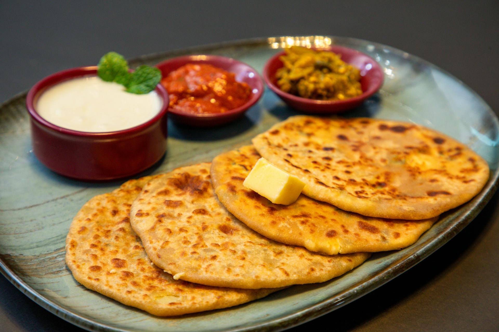

Alooparatha Recipe

🥔 Aloo Paratha (Spiced Potato Stuffed Flatbread) 🌿
Aloo Paratha is a popular and hearty Indian flatbread stuffed with a
flavorful, spiced mashed potato filling. It's often enjoyed for breakfast,
lunch, or dinner and is typically served hot with a dollop of butter,
plain yogurt (curd), or a side of pickle (achaar) and chutneys. The key to
a perfect paratha is a soft outer layer and a well-seasoned, evenly spread
filling.
Ingredients List
- 2 cups whole wheat flour (atta)
- 1/2 tsp salt
- 1 tsp oil (optional)
- Water, as needed for kneading
- 3 large potatoes, boiled, peeled, and mashed
- 1/2 cup finely chopped red onion (optional)
- 1 green chili, finely chopped (adjust to taste)
- 1 tbsp grated ginger
- 1/2 cup finely chopped fresh coriander leaves
- 1 tsp ground coriander powder
- 1/2 tsp cumin powder
- 1/2 tsp dried mango powder (amchur) or lemon juice
- 1/2 tsp red chili powder (adjust to taste)
- Salt to taste
- Ghee or oil, for cooking the parathas
- Butter, plain yogurt, and pickles/chutneys, for serving
Steps to Make
-
Prepare the Dough: Mix flour, salt, and water to knead
a soft dough. Let it rest for 30 minutes.
-
Prepare the Filling: Combine mashed potatoes with all
the specified filling ingredients and mix thoroughly.
-
Assemble the Paratha: Divide both the dough and the
filling into equal-sized balls.
-
Stuff the Dough: Flatten a dough ball, place a filling
ball inside, pinch the edges to seal, and flatten gently.
-
Roll the Paratha: Lightly dust with flour and gently
roll the stuffed ball into a 6-7 inch circle.
-
Cook the Paratha: Heat a flat griddle (tava) over
medium-high heat. Place the paratha on the hot griddle.
-
Apply Ghee/Oil: Flip the paratha once bubbles appear.
Brush ghee or oil on both sides.
-
Press and Cook: Gently press the paratha with a spatula
until golden brown spots appear and it puffs up slightly.
-
Serve: Serve immediately with butter, yogurt, and your
choice of pickle/chutney.
Home